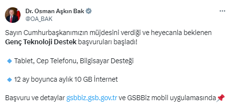

Cumhurbaşkanı Edoğan'ın müjdesini verdiği üniversite öğrencilerine yönelik teknolojik cihaz ve aylık 10 GB ücretsiz internet desteği için başvurular başladı. 9 bin 500 lirayı geçmeyen cihazlar için yapılacak destekten 25 yaşından büyükler faydalanamayacak. 5.500 TL'ye kadar yapılacak destek, gerekli şartları karşılayan gençlerin hesabına yatırılacak.
Gençlik ve Spor Bakanı Osman Aşkın Bak, yükseköğretim öğrencilerine yönelik "teknolojik cihaz ve internet desteği" başvurularının başladığını duyurdu.
Sosyal medya üzerinden açıklama yapan Bakan Bak, "Sayın Cumhurbaşkanımızın müjdesini verdiği ve heyecanla beklenen Genç Teknoloji Destek başvuruları başladı! Başvuru ve detaylar https://gsbbiz.gsb.gov.tr ve GSBBiz mobil uygulamasında" ifadelerini kullandı.

Desteğe ilişkin şartlar dün Resmi Gazete'de yayımlanan tebliğ ile duyurulmuştu. Buna göre, satın alım tarihi itibari ile 26 yaşından gün almamış Türkiye Cumhuriyeti vatandaşı ve açık öğretim programları hariç bir yükseköğretim programına kayıtlı öğrenciler başvuru yapabilecek. Cihazın, vergiler dahil nihai satış fiyatı 9 bin 500 lirayı geçemeyecek ve cihaz ikinci el olamayacak.
Satın alınan teknolojik cihaza ilişkin elektronik ortamda düzenlenen fatura olması ve faturanın desteği alacak öğrencinin Türkiye Cumhuriyeti Kimlik Numarasını da içerecek şekilde adına düzenlenmiş olması şartı da aranacak. Satın alınan elektronik cihaz için bildirilen IBAN numarasının da öğrenciye ait olması zorunlu olacak.
Teknolojik cihaz desteğinden faydalanmak isteyen öğrenciler, Gençlik ve Spor Bakanlığının bilişim sistemi üzerinden başvuru yapacak. Başvurular kimlik doğrulaması ile yapılacak ve başvuruda, kimlik bilgileri, fatura numarası, fatura tarihi ve teknolojik cihazın satın alındığı firmanın vergi kimlik numarası veya Türkiye Cumhuriyeti Kimlik Numarasının, kendi adına kayıtlı telefon numarasının, IBAN numarasının, mobil telefon cihaz desteği için IMEI numarasının ve bakanlık tarafından talep edilen diğer bilgi ve belgelerin sisteme girilmesi zorunlu olacak.
Başvurular değerlendirildikten sonra şartları sağlamaması halinde reddedilecek ve bilgilendirme sistem üzerinden sağlanacak. Başvurunun kabulü halinde ise mobil telefon cihazının nihai satış bedelinin yüzde 44,44'ü, bilgisayar cihazının nihai satış bedelinin yüzde 16,66'sı oranında hesaplanan teknolojik cihaz desteği tutarı Gençlik ve Spor Bakanlığı tarafından öğrencinin bildirmiş olduğu IBAN numarasıyla hesabına aktarılacak ve bilgilendirme sistem üzerinden sağlanacak.
Destek tutarı 5.500 TL'yi geçemeyecek.Öğrenciler farklı tip cihazlar için destekten yararlanabilecek ama destek tutarı 5 bin 500 Türk Lirasını geçemeyecek.
İnternet desteği almak isteyen öğrenciler de başvurularını bakanlık bilişim sisteminden yapacak. İnternet desteğinden yararlanmak isteyen öğrencilerde de açık öğretim programları hariç yükseköğretim programlarına kayıt, 26 yaşından gün almama ve destekten yararlanılacak telefon hattının öğrenciye ait olması şartları aranacak. İnternet desteğinden faydalanmaya ilişkin ilk başvurular bugünden itibaren iki ay içinde yapılacak.